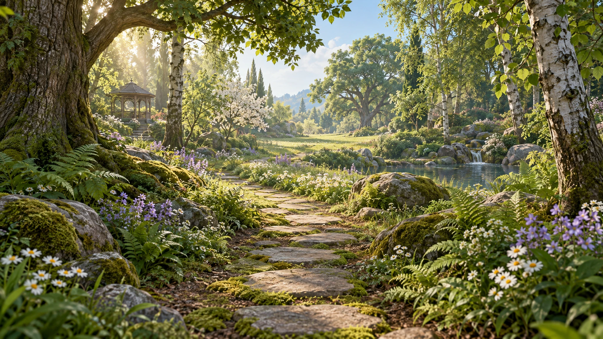

숲꾸미기너를 위한 작은 숲
이 빈터에 너만의 숲을 만들어 볼까요? 몇 걸음 걸어 보고, ‘숲 꾸미기’를 누르면 꾸밀 수 있어요.
나의 손끝에서 피어날 숲
너를 위한 작은 숲
0 / 80
위치 이동 · 꾹 눌러요
자동저장이 어려워요. 메뉴의 ‘작업 파일’에서 현재 작품을 내려받아 주세요.
나무 옆에 꽃을 더하거나, 가까이 걸어가 볼까요?

숲꾸미기
숲으로 한 걸음
나무와 풀꽃을 불러오는 중…
이 빈터에 너만의 숲을 만들어 볼까요? 몇 걸음 걸어 보고, ‘숲 꾸미기’를 누르면 꾸밀 수 있어요.
자동저장이 어려워요. 메뉴의 ‘작업 파일’에서 현재 작품을 내려받아 주세요.
나무 옆에 꽃을 더하거나, 가까이 걸어가 볼까요?

나무와 풀꽃을 불러오는 중…